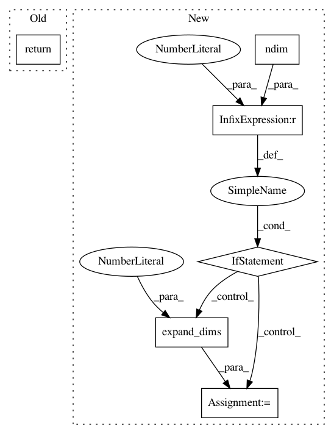

75bef59016a8a230823a04836e1ab6e5bf0079dc,keras/backend/tensorflow_backend.py,,dot,#Any#Any#,106
Before Change
// LINEAR ALGEBRA
def dot(x, y):
return tf.matmul(x, y)
def batch_dot(x, y, axes=None):
if axes:
After Change
with a 3D tensor, reproduces the Theano behavior
(e.g. (2, 3).(4, 3, 5) = (2, 4, 5))
"""
if ndim(x) == 2 and ndim(y) == 3:
slices = []
for i in range(int_shape(y)[0]):
slice_i = tf.matmul(x, y[i, :, :])
slice_i = expand_dims(slice_i, 1)
slices.append(slice_i)
out = tf.concat(1, slices)
return out
out = tf.matmul(x, y)
return out
In pattern: SUPERPATTERN
Frequency: 3
Non-data size: 6
Instances
Project Name: keras-team/keras
Commit Name: 75bef59016a8a230823a04836e1ab6e5bf0079dc
Time: 2016-04-01
Author: francois.chollet@gmail.com
File Name: keras/backend/tensorflow_backend.py
Class Name:
Method Name: dot
Project Name: keras-team/keras
Commit Name: 8b3543fca9d811c638bb72d78601c8564f5465fd
Time: 2016-04-03
Author: EderSantana@users.noreply.github.com
File Name: keras/backend/tensorflow_backend.py
Class Name:
Method Name: batch_dot
Project Name: keras-team/keras
Commit Name: 8b3543fca9d811c638bb72d78601c8564f5465fd
Time: 2016-04-03
Author: EderSantana@users.noreply.github.com
File Name: keras/backend/theano_backend.py
Class Name:
Method Name: batch_dot